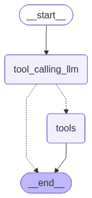

Building Chatbot With Multiple Tools Using Langgraph#
Aim#
Create a chatbot with tool capabilities from arxiv, wikipedia search and some functions
from langchain_community.tools import ArxivQueryRun,WikipediaQueryRun
from langchain_community.utilities import WikipediaAPIWrapper,ArxivAPIWrapper
api_wrapper_arxiv=ArxivAPIWrapper(top_k_results=2,doc_content_chars_max=500)
arxiv=ArxivQueryRun(api_wrapper=api_wrapper_arxiv)
print(arxiv.name)
arxiv
arxiv.invoke("Attention is all you need")
"Published: 2024-07-22\nTitle: Attention Is All You Need But You Don't Need All Of It For Inference of Large Language Models\nAuthors: Georgy Tyukin, Gbetondji J-S Dovonon, Jean Kaddour, Pasquale Minervini\nSummary: The inference demand for LLMs has skyrocketed in recent months, and serving\nmodels with low latencies remains challenging due to the quadratic input length\ncomplexity of the attention layers. In this work, we investigate the effect of\ndropping MLP and attention layers at inference time o"
api_wrapper_wiki=WikipediaAPIWrapper(top_k_results=1,doc_content_chars_max=500)
wiki=WikipediaQueryRun(api_wrapper=api_wrapper_wiki)
wiki.name
'wikipedia'
wiki.invoke("What is machine learning")
'Page: Machine learning\nSummary: AI personal\nMachine learning (ML) is a field of study in artificial intelligence concerned with the development and study of statistical algorithms that can learn from data and generalise to unseen data, and thus perform tasks without explicit instructions. Within a subdiscipline in machine learning, advances in the field of deep learning have allowed neural networks, a class of statistical algorithms, to surpass many previous machine learning approaches in perfor'
from dotenv import load_dotenv
load_dotenv()
import os
os.environ["TAVILY_API_KEY"]=os.getenv("TAVILY_API_KEY")
os.environ["GROQ_API_KEY"]=os.getenv("GROQ_API_KEY")
### Tavily Search Tool
from langchain_community.tools.tavily_search import TavilySearchResults
tavily = TavilySearchResults()
C:\Users\Welcome\AppData\Local\Temp\ipykernel_17720\3584238.py:4: LangChainDeprecationWarning: The class `TavilySearchResults` was deprecated in LangChain 0.3.25 and will be removed in 1.0. An updated version of the class exists in the `langchain-tavily package and should be used instead. To use it run `pip install -U `langchain-tavily` and import as `from `langchain_tavily import TavilySearch``.
tavily = TavilySearchResults()
tavily.invoke("Provide me the recent AI news for march 3rd 2025")
[{'title': 'Top 5 AI trends in March 2025: AI agents, smarter supply chains ...',
'url': 'https://www.neudesic.com/blog/top-5-ai-trends-march-2025/',
'content': 'March 2025 has brought a fresh wave of AI innovations that go beyond theoretical breakthroughs and translate directly into real-world impact. From OpenAI’s newly released tools for building AI agents to Microsoft’s external knowledge integration approach, this month’s highlights underscore how artificial intelligence is evolving in ways that matter today, not just tomorrow. Whether it’s optimizing supply chains, pushing the limits of robotics, or making AI systems smarter and more trustworthy, [...] Below, we delve into five top AI trends from March 2025 and explore the practical ways they’re changing industries—from retail to robotics—and setting the stage for what’s ahead. \n\n## 1. OpenAI Releases New Tools for Building AI Agents [...] natural way in a variety of domains. The investment in physical AI, like Gemini Robotics, holds the potential to revolutionize industries such as manufacturing and healthcare, by enabling robots to take on tasks that require both complicated instructions and advanced motor skills.',
'score': 0.9020676},
{'title': 'GPT 4.5 is out! — Weekly AI Newsletter (March 3rd 2025) - Medium',
'url': 'https://medium.com/nlplanet/gpt-4-5-is-out-weekly-ai-newsletter-march-3rd-2025-6b31dd83ca60',
'content': 'Sign up\n\nSign in\n\nSign up\n\nSign in\n\n## Generative AI\n\nGenerative AI\n\nExplanations of AI, machine learning, news, guides, courses, papers, and more.\n\n# GPT 4.5 is out! — Weekly AI Newsletter (March 3rd 2025)\n\n## Anthropic releases Claude 3.7 Sonnet, OpenAI expands Deep Research for Plus users, and Google launches new code assistant\n\nFabio Chiusano\n\n--\n\nListen\n\nShare\n\n## 😎 News From The Web\n\n## 📚 Guides From The Web\n\n## 🔬 Interesting Papers and Repositories\n\n## ✨ Extra Content [...] Thank you for reading!\n\n--\n\n--\n\nGenerative AI\nGenerative AI\n\n## Published in Generative AI\n\nExplanations of AI, machine learning, news, guides, courses, papers, and more.\n\nFabio Chiusano\nFabio Chiusano\n\n## Written by Fabio Chiusano\n\nI write about Artificial Intelligence news, guides, courses, papers, and more.\n\n## No responses yet\n\nHelp\n\nStatus\n\nAbout\n\nCareers\n\nPress\n\nBlog\n\nPrivacy\n\nRules\n\nTerms\n\nText to speech',
'score': 0.8995547},
{'title': 'The latest AI news we announced in March - The Keyword',
'url': 'https://blog.google/technology/ai/google-ai-updates-march-2025/',
'content': '# The latest AI news we announced in March\n\nApr 04, 2025\n\nHere’s a recap of some of our biggest AI updates from March, including Gemini 2.5 Pro, expanded access to AI Overviews, the release of AI Mode and more.\n\nSuperG\n\n## General summary [...] Google made significant progress in AI during March. They expanded access to AI Overviews and introduced AI Mode in Search, making it easier to find answers and explore topics. They also released Gemini 2.5 Pro, their most intelligent AI model, and Gemini Robotics, which aims to bring AI into the physical world. Google is also using AI to help developers create applications, detect wildfires, and protect nature.\n\n## Shakespeare-ish [...] Google made significant progress in AI during March. They expanded access to AI Overviews and introduced AI Mode in Search, making it easier to find answers and explore topics. They also released Gemini 2.5 Pro, their most intelligent AI model, and Gemini Robotics, which aims to bring AI into the physical world. Google is also using AI to help developers create applications, detect wildfires, and protect nature.',
'score': 0.8338803},
{'title': 'WiM Presents: Integrating Ethics into AI Development - March 3, 2025',
'url': 'https://miccai.org/index.php/news/2025/02/17/wim-presents-integrating-ethics-into-ai-development-march-3-2025',
'content': 'Speaker: Dr. Elise Li Zheng, Columbia University Irving Medical Center \nMonday, March 3, 2025 \n5:00 - 6:00 PM UTC / 9:00 - 10:00 AM PST / 12:00 – 1:00 PM EST [...] The last decade has seen an unprecedented growth in Artificial Intelligence (AI), with various tools and approaches being introduced to the medical and healthcare fields. Developing ethical, inclusive, and equitable AI tools and datasets requires interdisciplinary collaborations and meaningful community engagement. However, forging collaborative relationships in the field of AI presents multiple challenges: What is the scope of ethical AI? Who are considered experts? What institutional and [...] # MICCAI MICCAI\n\n## About MICCAI\n\n## \n\n## \n\n## Membership\n\n## \n\n## Events\n\n## \n\n## Interest Groups\n\n## \n\n## Publications\n\n## \n\n## Education\n\n## \n\n### News\n\n# WiM Presents: Integrating Ethics into AI Development - March 3, 2025\n\nMonday 17th February 2025\n\n#### Women in MICCAI (WiM) is happy to announce the fourth invited talk in the WiM "Health Equity in the AI Era" Webinar Series\n\n### Integrating Ethics into AI development: Towards Robust Interdisciplinary Collaborations',
'score': 0.7777226},
{'title': 'AI spending is boosting the economy, many businesses in survival ...',
'url': 'https://www.cnbc.com/2025/10/25/ai-spending-is-boosting-the-economy-many-businesses-in-survival-mode.html',
'content': 'Investors are giddy about the massive investments they\'re seeing in AI infrastructure. Broadcom shares are up more than 50% this year after more than doubling in each of the prior two years, while Nvidia and Alphabet have jumped almost 40% in 2025.\n\nThat explains why the S&P 500 and Nasdaq are up 15% and 20%, respectively, reaching record highs on Friday, even as the government shutdown continues to cause economic angst. [...] Pappas\' story and many like it are being masked in the macro data by the power of AI. In the first half of the year, AI-related capital expenditures contributed to 1.1% of GDP growth, according to a September report from JPMorgan Chase. That spending outpaced the U.S. consumer "as an engine of expansion," the report said.\n\nTotal U.S. GDP increased at an annual rate of 3.8% during the second quarter of 2025 after falling 0.5% in the first quarter, the Commerce Department said. [...] Wiring sits inside of the Data Hall of the Microsoft data center campus, currently under construction, after Microsoft\'s Vice Chair and President Brad Smith announced a plan to spend $4 billion on an additional artificial intelligence data center, in Mount Pleasant, Wisconsin, U.S., Sept. 18, 2025. \nCNBC logo\n\n#### News Tips\n\nGot a confidential news tip? We want to hear from you.\n\n#### CNBC Newsletters\n\nSign up for free newsletters and get more CNBC delivered to your inbox',
'score': 0.7038554}]
### Combine all the tools in the list
tools=[arxiv,wiki,tavily]
## Initialize my LLM model
from langchain_groq import ChatGroq
llm=ChatGroq(model="qwen/qwen3-32b")
llm_with_tools=llm.bind_tools(tools)
from pprint import pprint
from langchain_core.messages import AIMessage, HumanMessage
llm_with_tools.invoke([HumanMessage(content=f"What is the recent AI News")])
AIMessage(content='', additional_kwargs={'reasoning_content': 'Okay, the user is asking for recent AI news. I need to figure out which tool to use here. Let me check the available functions.\n\nFirst, there\'s the arxiv function, which is for scientific papers in fields like Physics and Computer Science. But the user isn\'t asking about research papers specifically. Then there\'s Wikipedia, which is good for general knowledge and historical info, but maybe not the latest news. The third option is tavily_search_results_json, described as a search engine for current events. That sounds perfect because the user wants recent news. \n\nSo I should use the tavily_search_results_json function with the query "recent AI News". Let me make sure the parameters are correct. The function requires a query string, which I have. I\'ll format the tool call accordingly.\n', 'tool_calls': [{'id': 'd4mp46n6m', 'function': {'arguments': '{"query":"recent AI News"}', 'name': 'tavily_search_results_json'}, 'type': 'function'}]}, response_metadata={'token_usage': {'completion_tokens': 191, 'prompt_tokens': 399, 'total_tokens': 590, 'completion_time': 0.425927405, 'prompt_time': 0.016930014, 'queue_time': 0.245711065, 'total_time': 0.442857419}, 'model_name': 'qwen/qwen3-32b', 'system_fingerprint': 'fp_d58dbe76cd', 'service_tier': 'on_demand', 'finish_reason': 'tool_calls', 'logprobs': None, 'model_provider': 'groq'}, id='lc_run--5f0e7748-326e-4d28-9171-08ac664a32be-0', tool_calls=[{'name': 'tavily_search_results_json', 'args': {'query': 'recent AI News'}, 'id': 'd4mp46n6m', 'type': 'tool_call'}], usage_metadata={'input_tokens': 399, 'output_tokens': 191, 'total_tokens': 590})
llm_with_tools.invoke([HumanMessage(content=f"What is the recent AI News")]).tool_calls
[{'name': 'tavily_search_results_json',
'args': {'query': 'recent AI news'},
'id': 't6m40kckt',
'type': 'tool_call'}]
## State Schema
from typing_extensions import TypedDict
from langchain_core.messages import AnyMessage
from typing import Annotated
from langgraph.graph.message import add_messages
class State(TypedDict):
messages:Annotated[list[AnyMessage],add_messages]
### Entire Chatbot With LangGraph
from IPython.display import Image, display
from langgraph.graph import StateGraph, START, END
from langgraph.prebuilt import ToolNode
from langgraph.prebuilt import tools_condition
### Node definition
def tool_calling_llm(state:State):
return {"messages":[llm_with_tools.invoke(state["messages"])]}
# Build graph
builder = StateGraph(State)
builder.add_node("tool_calling_llm", tool_calling_llm)
builder.add_node("tools", ToolNode(tools))
builder.add_edge(START, "tool_calling_llm")
builder.add_conditional_edges(
"tool_calling_llm",
# If the latest message (result) from assistant is a tool call -> tools_condition routes to tools
# If the latest message (result) from assistant is a not a tool call -> tools_condition routes to END
tools_condition,
)
builder.add_edge("tools", END)
graph = builder.compile()
# View
display(Image(graph.get_graph().draw_mermaid_png()))

messages=graph.invoke({"messages":HumanMessage(content="1706.03762")})
for m in messages['messages']:
m.pretty_print()
================================ Human Message =================================
1706.03762
================================== Ai Message ==================================
Tool Calls:
arxiv (w98wt2bhx)
Call ID: w98wt2bhx
Args:
query: 1706.03762
================================= Tool Message =================================
Name: arxiv
Published: 2023-08-02
Title: Attention Is All You Need
Authors: Ashish Vaswani, Noam Shazeer, Niki Parmar, Jakob Uszkoreit, Llion Jones, Aidan N. Gomez, Lukasz Kaiser, Illia Polosukhin
Summary: The dominant sequence transduction models are based on complex recurrent or
convolutional neural networks in an encoder-decoder configuration. The best
performing models also connect the encoder and decoder through an attention
mechanism. We propose a new simple network architecture, the Transformer, base
messages=graph.invoke({"messages":HumanMessage(content="Provide me the top 10 recent AI news for MArch 3rd 2025")})
for m in messages['messages']:
m.pretty_print()
================================ Human Message =================================
Provide me the top 10 recent AI news for MArch 3rd 2025
================================== Ai Message ==================================
Tool Calls:
tavily_search_results_json (nm4867kat)
Call ID: nm4867kat
Args:
query: top 10 AI news March 3 2025
================================= Tool Message =================================
Name: tavily_search_results_json
[{"title": "Top Viral AI & Tech News (March 3 - March 7, 2025) - YouTube", "url": "https://www.youtube.com/watch?v=n0icz4P221E", "content": "guys so china has an ai breakthrough with a company called a startup called monica and they recently released manuse it's an ai agent that's going to be capable of independently planning and executing the most complex tasks so this is going to be a development that's pretty close to deepseek however this is a more advanced innovation and so this is a significant milestone in ai autonomy this is changing the game you guys we're talking about automating intricate processes reducing the need for [...] technology is going to be here next year that we're not even talking about because we weren't talking about quantum computing a year two years ago we weren't aside from like movies and stuff you know we weren't talking about super ai i mean ash probably was a year two year two years ago but it's like such exciting times such exciting times all right let's go to the next piece y'all got me going in the comments all right so next piece of news ai is taking over dating apps so matchgroup which is [...] mentioned earlier how especially with quantum computing we're getting into limitless drug discoveries so now they can cure almost anything maybe you know they're trying to take a little ethical stand and you know um halt the progress towards artificial super intelligence where ai surpasses human capacity um so it's definitely a very interesting time i'm interested to see what you guys think what do you guys think about a future where anything can be cured any ailment any condition this is the", "score": 0.87681407}, {"title": "March 2025 round-up of interesting AI news and announcements", "url": "https://nationalcentreforai.jiscinvolve.org/wp/2025/03/27/march-2025-round-up-of-interesting-ai-news-and-announcements/", "content": "Microsoft Ability Summit 2025: Accessibility in the AI era Microsoft announced new accessibility features including an improvement in Microsoft Teams for Sign Language View, where Teams will soon identify and highlight sign language users as speakers in meetings. Additionally, a recent EY study highlighted that Copilot has helped 76% of neurodiverse employees improve work performance by enhancing communication, memory recall, and focus. [...] AI-powered app takes home the trophy at further education ‘Oscars’ City College Plymouth’s Quality of Education app won the Jisc sponsored category for effective use of digital technology at the 2025 Association of Colleges (AoC) Beacon Awards. The app, leverages AI to enhance the quality of education, stood out for its innovative approach and significant impact on further education. This recognition highlights the app’s role in transforming learning experiences and improving educational", "score": 0.8660535}, {"title": "AI Weekly Digest - March 3 2025 - LinkedIn", "url": "https://www.linkedin.com/pulse/ai-weekly-digest-march-3-2025-pa-media-ddmie", "content": "Alibaba's Wan 2.1 now open source\n\nAlibaba has announced its video and image-generating AI model Wan 2.1 is now publicly available - or open source. Reports said the Chinese e-commerce leader's move was likely to increase its uptake and further intensify competition in AI. The move follows Chinese startup DeepSeek's market disrupting rollout of low-cost open-source models last month.\n\nLawsuit: Google AI Overviews 'eroding demand for original content' [...] Chinese search giant Baidu is set to launch an upgraded version of its Ernie chatbot next month, sources said. Reports said this will feature improved capabilities in areas such as reasoning, with the 4.5 version also coming with 'enhanced multimodal capabilities' - an AI system capable of processing and integrating data, including text video, images and audio.\n\nClaim: Rise of artificial intelligence to upend software jobs market [...] New ChatGPT model 'dramatically reduces rate of hallucinations'\n\nOpenAI has launched GPT-4.5, an update to the model underpinning ChatGPT which it said dramatically reduces the rate of 'hallucinations', or inaccurate information generated in response to queries. It said the model is “at the frontier of what is possible in unsupervised learning”, and added that \"with every new order of magnitude of compute comes novel capabilities\".", "score": 0.85509074}, {"title": "3 March 2025 - Latest AI News - Apple Podcasts", "url": "https://podcasts.apple.com/us/podcast/3-march-2025-latest-ai-news/id1755480003?i=1000697309136", "content": "Algeria\n Angola\n Armenia\n Azerbaijan\n Bahrain\n Benin\n Botswana\n Brunei Darussalam\n Burkina Faso\n Cameroun\n Cape Verde\n Chad\n Côte d’Ivoire\n Congo, The Democratic Republic Of The\n Egypt\n Eswatini\n Gabon\n Gambia\n Ghana\n Guinea-Bissau\n India\n Iraq\n Israel\n Jordan\n Kenya\n Kuwait\n Lebanon\n Liberia\n Libya\n Madagascar\n Malawi\n Mali\n Mauritania\n Mauritius\n Morocco\n Mozambique\n Namibia\n Niger (English)\n Nigeria\n Oman [...] Algeria\n Angola\n Armenia\n Azerbaijan\n Bahrain\n Benin\n Botswana\n Brunei Darussalam\n Burkina Faso\n Cameroun\n Cape Verde\n Chad\n Côte d’Ivoire\n Congo, The Democratic Republic Of The\n Egypt\n Eswatini\n Gabon\n Gambia\n Ghana\n Guinea-Bissau\n India\n Iraq\n Israel\n Jordan\n Kenya\n Kuwait\n Lebanon\n Liberia\n Libya\n Madagascar\n Malawi\n Mali\n Mauritania\n Mauritius\n Morocco\n Mozambique\n Namibia\n Niger (English)\n Nigeria\n Oman [...] Qatar\n Congo, Republic of\n Rwanda\n São Tomé and Príncipe\n Saudi Arabia\n Senegal\n Seychelles\n Sierra Leone\n South Africa\n Sri Lanka\n Tajikistan\n Tanzania, United Republic Of\n Tunisia\n Turkmenistan\n United Arab Emirates\n Uganda\n Yemen\n Zambia\n Zimbabwe", "score": 0.8443195}, {"title": "March 2025: All AI updates from the past month - SD Times", "url": "https://sdtimes.com/ai/march-2025-all-ai-updates-from-the-past-month/", "content": "Claude will respond with direct citations of its web sources, allowing users to fact check the information.\n\nGoogle launches Canvas to enable easier collaboration with Gemini\n\nGoogle is making it easier for developers to collaborate with Gemini with the launch of Canvas, an interactive space to create and refine code. \n\nCanvas could be used to build reports, blog posts, study guides, visual timelines, interactive prototypes, code snippets, and more. [...] Additionally, Anthropic Console now supports the company’s latest model, Claude 3.7 Sonnet, and offers new capabilities to assist users in writing prompts for that model’s extended thinking mode, as well as setting the budget for extended thinking. \n\nSalesforce launches Agentforce 2dx\n\nAgentforce is the company’s platform for integrating AI agents into employee workflows, and Agentforce 2dx introduces new features that make it even easier for AI agents to be set up. [...] The participating institutions include Caltech, the California State University system, Duke University, the University of Georgia, Harvard University, Howard University, Massachusetts Institute of Technology, the University of Michigan, the University of Mississippi, The Ohio State University, the University of Oxford, Sciences Po, Texas A&M University, Boston Children’s Hospital, and the Boston Public Library.", "score": 0.83678174}]
messages=graph.invoke({"messages":HumanMessage(content="What is machine learning")})
for m in messages['messages']:
m.pretty_print()
================================ Human Message =================================
What is machine learning
================================== Ai Message ==================================
Tool Calls:
wikipedia (6bxzvh8w4)
Call ID: 6bxzvh8w4
Args:
query: Machine learning
================================= Tool Message =================================
Name: wikipedia
Page: Machine learning
Summary: AI personal
Machine learning (ML) is a field of study in artificial intelligence concerned with the development and study of statistical algorithms that can learn from data and generalise to unseen data, and thus perform tasks without explicit instructions. Within a subdiscipline in machine learning, advances in the field of deep learning have allowed neural networks, a class of statistical algorithms, to surpass many previous machine learning approaches in perfor